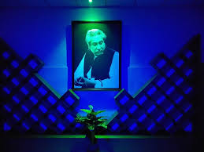

Depertments
Automobile Department
A Diploma Engineers of Automobile Technology can take his job in vehicles related section of the Govt. and private sectors. They can take a job in BRTA, BRTC, BIWTC, Driving Colleges, several mills and factories, several workshops and garages in the Govt. and private sectors. They can also be an Instructor in a Govt. or private polytechnic institute. An Automobile Engineer has more opportunities to take a job in foreign countries specially in the Middle east as a technician, foreman etc. in several mills and factories. After completing IELTS successfully an Automobile Engineer can take higher education in the abroad besides his formal education in respective technology. Though there is no scope of B.Sc Engineering in Bangladesh they can get the opportunity to take this degree in Mechanical Technology. But the scope of B.Sc Engineering in Automobile Technology is going to open by the Govt. within the very short time.
Civil(Wood) Department
A Diploma Engineer of civil(Wood) technology can serve in the several Govt. and private sectors like Furniture industry, BFIDC, Road and Highway, WASA, DESA, PDB, Education Ministry, Forest Ministry, Housing Company, Developing companies of Land Properties etc. An architect can also be an Instructor in a Govt. or Private polytechnic institute.
Computer Department
Welcome to the department of Computer Technology. As a student of this department, you will find teachers who are very young who got the opportunity to attain age and maturity. A very friendly and congenial atmosphere exists for fostering a friendly and healthy teacher-student relationship. Besides all the academic works, you get the chance of participating in extra-curricular activities. Diploma graduates of Computer Technology are now one of strongest forces in the job market of Bangladesh. Software development, IT-based services, Polytechnic Institute, telecom operators and vendors – name any of the job sectors and you will find a stronghold of Computer diploma graduates in each of them. Diploma graduates of this department have proved their ability to deliver the best in corporate environment and also take the performance standard to a higher level. Though the department is young, Computer Technology has printed its footmarks at every possible corner. With the continued effort, Computer Technology of BSPI is committed to deliver the best education and prepare students to compete with the global challenges to progress into a better future. I welcome you to be a part of this journey.
Construction Department
Construction engineering is a professional discipline that deals with the designing, planning, construction and management of infrastructures such as roads, tunnels, bridges, airports, railroads, facilities, buildings, dams, utilities and other projects. A construction engineer is a type of civil engineer who plans, directs, and supervises large construction projects. Most construction engineers specialize in a specific type of project such as commercial buildings, heavy highway (bridges, tunnels, and underground wastewater plants), mechanical systems, or electrical. Construction engineers operate as part engineering expert, part project manager, and part business manager. They creatively serve as a leader and middleman on construction projects to make sure everything about the project is safe, smooth, and structurally sound. Construction engineers usually work full time and may work longer 12-hour shifts seven days per week if they need to travel to a remote location to monitor project progress. Construction Engineer can serve in the several Govt. and private sectors like Road and Highway, WASA, PWD, LGED, PDB, BWDB, Education Engineering Department, Bangladesh Railway, Petro Bangla, DESA, DESCO, DPDC, City Corporation, Housing Company, Developing companies of Land Properties etc.
Electrical Department
A Diploma Engineer of Electrical Technology can serve in Govt. Non-Govt. and Private sector. In the Govt. sector they can serve in PDB, DESA, DESCO, Rural Electricity, Power Production Projects, Several Govt. mills and factories, power stations, operation and circuit oriented companies as a Sub-Assistant Engineer. In the private sector they can serve in Solar Companies, Housing Companies, Circuit-Oriented Companies, in the private power production companies, in the companies of electrical and electronic products etc as an Assistant or Sub-Assistant Engineer. An Electrical Engineer can also work as an Instructor in the Govt. & Private polytechnic institutes. They have also the opportunity to work in abroad as a supervisor or head electrician in USA, UK, Singapore, Oman, Bahrain and other Middle-East countries and they can earn lots of foreign exchanges. For this electric engineer there is a mass chance to get higher degree both in public and private universities especially in EEE Technology. They have also the opportunity to get the higher degree in abroad. Career : Diploma in Telecommunication Engineering.
Mechanical Department
A Diploma Engineer of Mechanical Technology can get more employment opportunities than any other technologies. The engineer of this technology can enter in most engineering sectors. They can choose a service in several mills, factories, industries, garments industries, ship-building, dock yard, workshops, garages etc of the Govt. and non-Govt. sectors. In govt. sectors they can particularly join as a superintendent, supervisor, and project engineer in several govt. mills like- Sugar-Mill, EPZ, BRTA, BRTC, WASA, DESA, DESCO etc. They can also be an instructor of govt. and non-govt. polytechnic institute. Now a days special BCS has been provided by Govt. to get higher class jobs for Mechanical Engineers.
Non-Tech Department
It gives me immense pleasure to offer a happy welcome you on Non-Tech department of Bangladesh Sweden Polytechnic Institute. This is mandated to run four-year Diploma-in Engineering on Six disciplines Automobile, Civil (Wood), Computer, Construction, Electrical and Mechanical Technology where Common subject for all Technology are Mathematics, Science, Industrial Economics, Management, English and Physical Training. There are Physics lab and chemistry Lab for Non-Tech department. The above common subject is run by the Non-Tech depart. We always try to ensure quality education and learning to become an excellent engineer but also assimilate social responsibilities and ethical principles so that they can strongly and safely realize improvement in the lives of people. We accept your cordial suggestion and would be available for any clarification you may wish to ask.
Our Campus
The Institute is located at Kaptai in a serene and calm valley near the dam on the Karnafully river. The picturesque view of the Kaptai Lake, and small industrial sheds on the dales, having greeneries all round, provide a natural fascination for all the beauty loving people along with a congenial academic atmosphere. The place is connected with Chittagong by 35 miles long metaled road and with Rangamati, by a 20 miles long lake journey. At every 15 minutes interval public buses ply from Chittagong to Kaptai daily via Chandraghona.
.

Computer Department
Construction Department

Electrical Department

Mechanical Department

Non-Tech Department

Civil(Wood) Department
Our Facilities
BSPI has the hostel facility both for Male & Female students. It has three hostel buildings of its own. Two is dedicated for male students and one is for female students. All Hostel are controlled and supervised by the BSPI Hostel authority.
The one double storey hostel named “Swedish Hostel” building is a modern structure with an accommodation for 176 students and another is three storey hostel named “Jahangir Hostel” with an accommodation for 88 students with dining facility. Both are luxuriously furnished with common rooms, and indoor game facilities. The dining system is maintained by students with the help of hostel authority.
“Swedish Female Hostel” building is also a modern structure with an accommodation for 60 female students where every room of the hostel has attached bath, toilet, wash room and sufficient number of furniture to accommodate female students. The common room, canteen, sounds and attractive atmosphere of the area is helpful for carrying out study by the female students pleasantly.

Swedish Hostel
Jahangir Hostel

Girls Hostel
Play Ground

Bspi Library
There is a medium size library in the institute with well selected and up-to-date volume of Texts and reference books, Journals (trade, Industrial and educational) and study guides. The library remains open during class-hours and also in the evening hours to enable the students to use the library in their off-time.
Visit library panel
What Our Principle Says
I am honored and feel very privileged to be the Principal of Bangladesh Sweden Polytechnic Institute, Kaptai. I am always excited and look forward to working with our students, teachers, staffs to make BSPI the best Institute it can be. B.S. Polytechnic Institute is a significant attraction in the academic heritage of its own. Students who attend BSPI find it to be a place where they can grow academically, morally and spiritually, in a fresh environment. Our campus is characterized by academic and administrative staffs that care about individuals and offer time to getting to know students. The beauty of our campus makes it an ideal atmosphere for learning, whether in the classroom, through academic and laboratory exercises, or through special projects, tutorials and assignments. A full complement of extra-curricular activities allows our entire students or student body to enjoy special interests, share in the excitement of student life and develop leadership skills that reflect individual competence. My commitment to our community of Technical Education is to provide methods to support constructive behaviors that will help keep our Institute safe and promote a positive learning environment. Finally, I look forward to warm welcoming you at naturally pristine Swedish campus.
Best Regards
Mohammad Abdul Matin Howlader
Principal(Additional Charge)
Phone: 03529-56291
E-mail: principal.bspi@yahoo.com
Our Department heads
Head of the Department(Automobile)
Mohammed Selim Afrad Joarder
Head of the Department(Civil-Wood)
Md. Shariful Islam
Head of the Department(Computer)
Engr. Mohammad Tarequl Islam
Head of the Department(Construction)
Engr. Mohammad Musharraf Hossain
Head of the Department(Non-Tech)
Mohammad Kamal Hossain
Sujit Kumar Biswas
Engr. Mohammad Musharraf Hossain
Head of the Department(Mechanical)
Md. Abdul Hamid